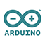

Jan Willem Groenenberg; Atos Senior Expert, IoT Platform Architect, Azure Advisory Board member 

Sander van de Velde; MVP, IoT Platform Architect, Azure Advisory Board member
In this hands-on lab you will be creating the complete chain from configuring, to bridging the cap between the connectivity providers clouds and the Microsoft Azure IoT platform, creating actionable insights on the Microsoft Azure IoT platform and sending commands all the way back to the device. This includes assembling hardware, configuring hardware and software and coding the missing logic to a complete IoT solution. The workshop will simulate a remote located machine malfunctioning and getting restarted based on the received telemetry and created insights based on the telemetry data. You will be creating all components to get the malfunctioning machine back up running again. All of that within 2-4 hours (2 hours is minimum).
Technologies used during the hands-on lab;
This hands-on lab will be guided by Valery Jacobs & Jan Willem Groenenberg & Sander van de Velde, so attendees have on site support for questions.
We will also provide background information about the used components in the hands-on lab.
The hands-on lab is created in conjunction with Atos and Microsoft Nederland.
Hardware used will remain property of Atos and Microsoft.
During the workshop the following experts will be present to guide you through the workshop:
Jan Willem Groenenberg; Atos Senior Expert, IoT Platform Architect, Azure Advisory Board member
Sander van de Velde; MVP, IoT Platform Architect, Azure Advisory Board member
| Event | Location | Date | # of attendees |
|---|---|---|---|
| Microsoft Tech Days 2016 | Amsterdam, The Netherlands | tba | 19 |
| Microsoft Tech Days 2016 | Amsterdam, The Netherlands | tba | 16 |
| Microsoft Tech Days 2016 | Amsterdam, The Netherlands | tba | 12 |
| Microsoft Tech Days 2016 | Amsterdam, The Netherlands | tba | 15 |
| dotNed Saturday 2017 | Veenendaal, The Netherlands | tba | 15 |
| Atos Innovatos 2017 | Amstelveen, The Netherlands | tba | 8 |
| Atos Innovatos 2017 | Groningen, The Netherlands | tba | 9 |
| Atos Innovatos 2017 | Eindhoven, The Netherlands | tba | 13 |
| Global Azure Bootcamp 2017 | Amstelveen, The Netherlands | tba | 12 |
| IoT Tech Day 2017 | Utrecht, The Netherlands | tba | 22 |
| Microsoft Tech Days 2017 | Amsterdam, The Netherlands | tba | 14 |
| Codecamp 2017 | Iasi, Romania | October 27, 2017 | 20 |
| LoRa IoT network | Apeldoorn, The Netherlands | April 7, 2018 | tba |
| Global Azure Bootcamp 2018 | Amstelveen, The Netherlands | April 21, 2018 | tba |
| TEQnation 2018 | Utrecht, The Netherlands | April 26, 2018 | tba |
The workshop consists of several chapters. The first two chapters will guide you through the essentials we want you to get your hands on. The other chapters are optional/extra if you have time left.
You have four options to choose from to start with. You can either go for physical hardware based on the The Things Uno (Lora/LoraWAN enabled Arduino Leonardo) programmed in C and connected via The Things Network, Or choose one of the device simulation applications like UWP (C#), NodeJS (JavaScript) or Java application (Java is only used for the simulation client).
Click on one of the logos to get started with the device or simulated device and follow that path for the rest of the workshop (at the end of each chapter, a link to the following chapter is providedConnecting a device to the Azure IoT Platform
| Choose the device or simulator to connect | |||
|---|---|---|---|
|  |

|
||
Receiving and handling telemetry in Azure
| Choose the device or simulator to receive telemetry from | |||
|---|---|---|---|
Passing commands back to actual devices or simulated devices
| Choose the device or simulator to pass commands back to | |||
|---|---|---|---|